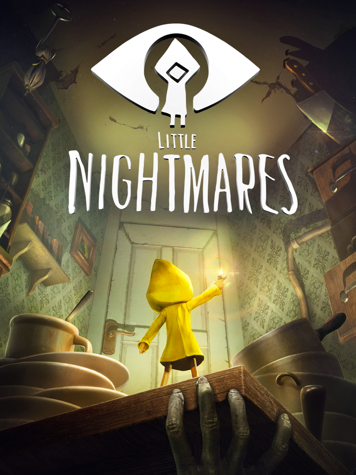

Little Nightmares
Little Nightmares
Details
|  | |
| Playtime | 3h 19m 0s |
| Last Activity | 2025-10-28 0:58:00 |
| Added | 2023-08-11 0:29:08 |
| Modified | 2025-10-02 9:40:19 |
| Completion Status | Completed |
| Library | Steam |
| Source | Steam |
| Platform | PC (Windows) |
| Release Date | 2017-04-28 |
| Community Score | 81 |
| Critic Score | 78 |
| User Score | |
| Genre | Adventure Indie Platform Puzzle |
| Developer | Tarsier Studios |
| Publisher | Bandai Namco Entertainment |
| Feature | Single Player |
| Links | Twitter Wikipedia Steam GOG Official Website Twitch YouTube Google Play App Store (iPhone) Xbox Playstation |
| Tag | 2.5D Action Adventure Atmospheric Dark Female Protagonist Great Soundtrack Horror Indie Platformer Psychological Horror Puzzle Puzzle Platformer Short Singleplayer Stealth Story Rich Strategy Survival Horror Third Person |
Description
The Little Nightmares series has been captivating millions of players worldwide since 2017. Now it’s your turn to try to survive the first entry in most charming horror series ever made.
Take on the role of Six, a lone child lost in a massive metal vessel known as the Maw, surrounded by dangerous, distorted versions of adults. You’ll need to do your best to escape in one piece or your fate will be worse than you ever dared dream.
OBSERVE YOUR SURROUNDINGS
You wake up in a damp, dark room. Your sole possession is a brass lighter. You have no memory of how you got here, but it’s clear that you are in danger. Only your keen eyes and quick wits can get you out in one piece.

FIND AN ESCAPE ROUTE
This world is not meant for children, but you can use your stature as an advantage with a bit of imagination. Climb drawers and shelves to find child-sized passageways through The Maw too tiny for the adults to reach and you’ll be safe… at least for a while.

AVOID THE RESIDENTS
The inhabitants of the Maw have only one use for children, and it’s never pretty. Children who don’t want to get caught should stay hidden and move carefully when they’re around. Under certain circumstances, a distraction might avert their attention long enough for you to scuttle away scott-free. Be careful, if you accidentally make too much noise, the Residents are quite determined once you’ve caught their eye.

RUN FOR YOUR LIFE
Sometimes, there’s no other choice but to run. If you can stay alive long enough to get somewhere the Residents can’t reach you, you might survive.

Can you make it through the Maw to freedom? Six is counting on you. Good luck, little one.